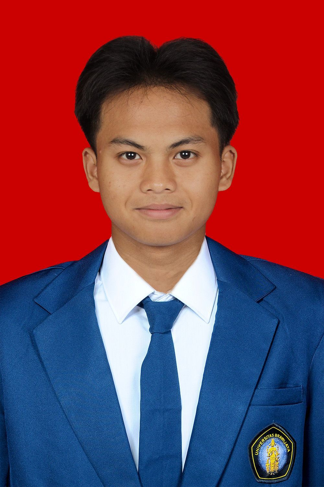

Halo! Saya Muhammad Daffa Firos Zaidan, mahasiswa S1 Teknik Informatika angkatan 2024 di Universitas Brawijaya. Saya memiliki antusiasme tinggi dalam mengeksplorasi dunia teknologi, terutama dalam analisis data, algoritma, dan pengembangan perangkat lunak.
Fokus karir dan minat belajar saya mengarah pada profesi Data Scientist. Selain terus mengasah logika pemrograman dan kemampuan teknis di depan layar, saya juga aktif mengambil peran strategis di organisasi kampus. Hal ini melatih saya untuk menjadi individu yang tidak hanya kuat secara teknis, tetapi juga tangguh dalam manajemen acara, komunikasi, dan kepemimpinan tim.

HMDTIF (Himpunan Mahasiswa Departemen Teknik Informatika)
INTRIVIA 2025
PORSIMABA FILKOM 2025
Program Spesialisasi: Data Science